Light, lenses and the sensor plane
Field of view, focus, depth of field, aberrations, distortion, resolution and lens selection
1Light, Lenses and the Sensor Plane
How field of view, focus and projection geometry decide what a camera can see
A camera does not record the world. It records the light that one particular assembly of glass chooses to deliver to one particular flat rectangle of silicon. Everything a vision algorithm later does, whether detecting, tracking, measuring or reconstructing, starts from that delivery, and decisions made in the optics are very hard to undo in software. A pedestrian who lands on forty pixels instead of four hundred, a corner smeared across three pixels because the sensor sits a few micrometres away from the plane of best focus, a straight wall edge that curls because the lens follows a different projection law than your code assumes: these are optical facts, not algorithm bugs.
This chapter builds the optics of a camera from the ground up. We start with the simplest imaging device, a pinhole, add a lens, and then answer the three questions that dominate practical camera design: what part of the world fits on the sensor (field of view), what part of that is sharp (focus and depth of field), and what changes when we push the field of view towards 180 degrees and beyond (fisheye lenses). Throughout, we keep one eye on the sensor plane, the physical surface where all of it has to come together.
After working through this chapter you should be able to:
- explain how a pinhole and a thin lens map a 3D scene onto the sensor plane, and where the focal length enters;
- compute horizontal, vertical and diagonal field of view, the scene footprint and the pixel focal length;
- explain why only one plane is sharp, and estimate blur, depth of field and hyperfocal distance;
- reason about where the sensor plane must sit, and what moves it (cover glass, tilt, temperature);
- describe why rectilinear lenses cannot reach 180°, how fisheye projection models differ, and how to calibrate them.
1.1From scene to sensor
Light leaves every point of a scene in every direction. A bare sensor placed in front of a scene would collect light from every scene point on every one of its pixels, and the result would be a featureless gray wash. To form an image, the camera must establish a correspondence: each point on the sensor should receive light from one scene point (or one direction) and from no other.
The simplest way to achieve this is a pinhole: an opaque barrier with a tiny hole, placed between scene and sensor (Figure 1.1). Light from a scene point can reach the sensor only along the single straight line through the hole, so every sensor point sees exactly one direction. By similar triangles, a scene point at lateral position X and depth Z in front of the pinhole lands at distance fX/Z from the axis on a sensor plane placed a distance f
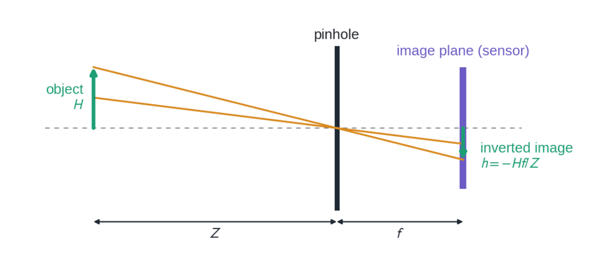
Equation (1.1) is the perspective projection that underlies nearly all of multiple-view geometry. It has four consequences worth remembering: the image is inverted; image size scales as 1/Z, so distant objects shrink; straight lines in the world stay straight in the image; and, because every ray passes through one point, everything is sharp regardless of its depth.
If the pinhole is so well behaved, why do cameras have lenses? Because of light. A hole small enough to give a sharp image admits very little of it, and a hole made even smaller blurs the image again through diffraction. A lens solves the dilemma by collecting light over a wide opening and bending it so that all the rays leaving one scene point arrive at one image point.
The pinhole model describes the geometry of an ideal camera: every scene point projects along a straight line through a single centre of projection. A real lens approximates this geometry while gathering orders of magnitude more light. Much of camera calibration is the work of measuring how, and by how much, a real lens departs from it.
Notation. We use the following symbols throughout. The optical axis is the line through the centre of the lens, perpendicular to the sensor. The sensor plane (or image plane) is the flat surface that carries the photosites. f is the focal length; D the diameter of the aperture and N = f/D the f-number; u the distance from lens to a scene point and v the distance from lens to the plane where that point is sharp; w and h the sensor width and height; and p the pixel pitch.
1.2The sensor plane
The sensor plane is where optics ends and measurement begins. It is a flat array of photosites with a physical width w = Wpx · p, where Wpx is the number of pixel columns and p the pixel pitch. Two sensors with the same resolution can differ enormously in physical size, and that size, more than the pixel count, determines how a given lens behaves: the same lens that is a mild wide-angle on a large sensor becomes a telephoto-like crop on a small one (Figure 1.2 and Table 1.1).
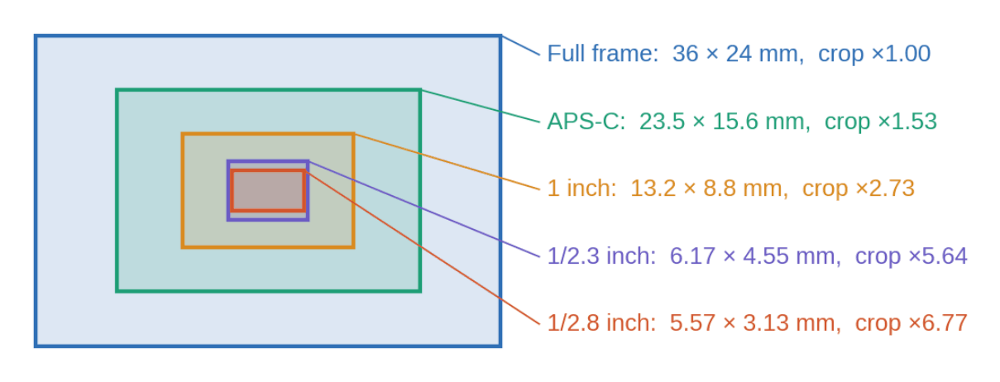
Table 1.1 Typical sensor formats. Exact dimensions vary slightly between manufacturers.
| Format | Width × height (mm) | Diagonal (mm) | Crop factor | Typical use |
|---|---|---|---|---|
| Full frame | 36 × 24 | 43.3 | 1.00 | professional photography, cinema |
| APS-C | 23.5 × 15.6 | 28.2 | 1.53 | mirrorless and DSLR cameras |
| 1 inch | 13.2 × 8.8 | 15.9 | 2.73 | industrial machine vision, premium compacts |
| 1/2.3 inch | 6.17 × 4.55 | 7.7 | 5.64 | compact and action cameras, drones |
| 1/2.8 inch | 5.57 × 3.13 | 6.4 | 6.77 | security, automotive and robotics cameras |
Sensor formats are named after historical video-camera tubes: a "1/2.3 inch" sensor is not 1/2.3 inch across. Always work from the datasheet width in millimetres, or compute it as Wpx · p. A 1920-pixel-wide sensor with 2.9 µm pixels, for example, is 5.57 mm wide.
Pixel pitch matters for a second reason. A sensor can only record detail up to its Nyquist frequency, 1/(2p). For p = 2.9 µm that is about 172 line pairs per millimetre, and the lens must deliver usable contrast at that frequency across the whole sensor if the pixel count is to mean anything. Small pixels therefore place heavy demands on lens quality, focus accuracy and, as we will see in Section 1.5, on the position of the sensor plane itself.
1.3The lens as a ray-bending machine
1.3.1The thin lens
A convex lens refracts light at its two curved surfaces so that rays leaving one scene point are bent towards a common image point. Rays that arrive parallel to the optical axis, as they would from a very distant point, converge at the focal point F′ at a distance f behind the lens; this distance is the focal length. For a lens thin enough that its thickness can be ignored, the relation between object distance u, image distance v and focal length is the thin-lens equation:
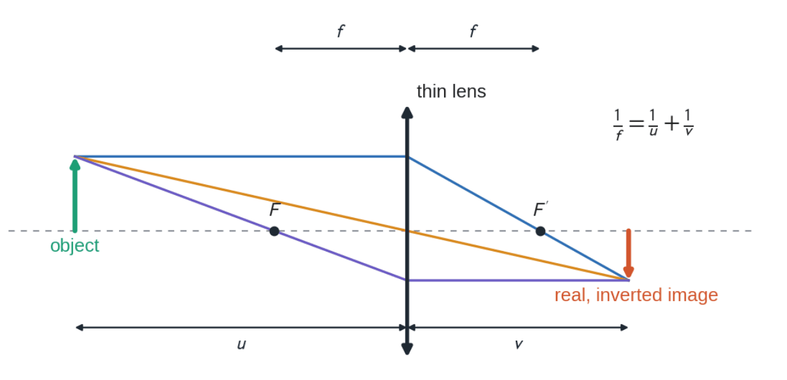
Figure 1.3 shows why three rays are enough: any two rays from the same object point meet at its image, and these three are the easiest to construct. The image is real (light actually arrives there, so a sensor can record it) and inverted. Its size relative to the object is the lateral magnification:
Two limiting cases fix intuition. As the object moves to infinity, 1/u vanishes and v becomes exactly f: a camera focused at infinity has its sensor one focal length behind the lens. As the object approaches the front focal point (u → f), the image recedes to infinity. Everything in between has v larger than f.
With f = 50 mm and u = 2000 mm, Equation (1.2) gives v = f u / (u − f) = 50 · 2000 / 1950 = 51.28 mm. The sensor must therefore sit 1.28 mm farther from the lens than it would for an object at infinity. The magnification is m = −v/u = −0.0256, so a 1.7 m tall person appears 43.6 mm tall on the sensor.
1.3.2Focusing means changing the image distance
Solving the thin-lens equation for v gives the position of the sharp image for any object distance. The quantity that matters mechanically is how far the lens must be moved away from the sensor, relative to its infinity position, in order to focus:
The extension Δ falls off quickly with distance (Figure 1.4a) and grows with the square of the focal length. A 50 mm lens focused at 1 m must move 2.63 mm; a 4 mm lens focused at 1 m moves only 16 µm. This is why short lenses used in robotics and automotive cameras can be fixed-focus: for objects farther than about 100f the extension is below 1% of f, and the whole working range sits within a few tens of micrometres of the infinity position.
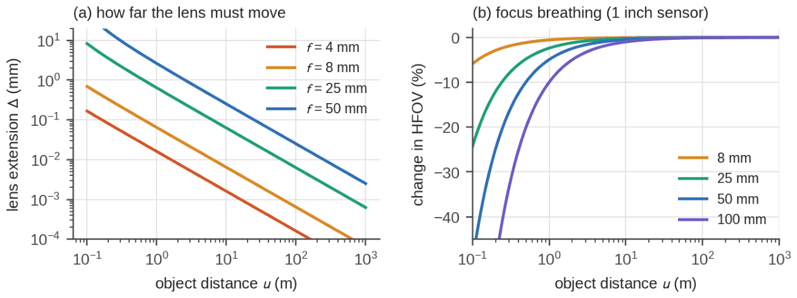
Moving the lens away from the sensor has a side effect that Figure 1.4b quantifies. The angle subtended by the sensor is set by v, not by f, so focusing closer narrows the field of view. For a 50 mm lens on a 1 inch sensor, focusing from infinity to 0.5 m reduces the horizontal field of view by about 10%. Lens designers fight this with internal focusing groups, but the effect never vanishes completely, and it means that the intrinsic parameters you calibrate are valid only for the focus setting at which you calibrated.
1.3.3Real lenses
A real camera lens contains between three and twenty elements, arranged to cancel the aberrations (colour fringing, blur away from the axis, curvature of the focal surface) that any single element introduces. Such a compound lens behaves, to a good approximation, like a thin lens with two modifications. First, it has two principal planes rather than one, and the distances u and v are measured from them rather than from the front or rear glass. Second, its brightness and depth of field are governed by the aperture stop, an adjustable diaphragm of diameter D. The ratio N = f/D is the f-number; the light reaching each pixel scales as 1/N2, which is why the standard f-number sequence 1.4, 2, 2.8, 4, 5.6, 8, 11 advances by factors of √2: each step halves the light.
Lenses for machine vision come in standardised mounts. The C-mount and CS-mount (flange distance 17.526 mm and 12.526 mm respectively) carry larger lenses for industrial cameras; the small M12 or S-mount (an M12 × 0.5 mm thread) dominates embedded, automotive and robotics work. In an M12 lens the thread is also the focus mechanism: turning the lens in its holder moves it along the optical axis, which will matter in Section 1.5.4.
The focal length printed on a lens is a nominal value. Tolerances of ±1–5% are common for low-cost lenses, and the effective focal length also drifts with temperature and focus setting. Never derive geometry from the datasheet value alone; use it to choose a lens and then calibrate.
1.4Field of view
1.4.1Definition and formula
The field of view (FOV) is the angular extent of the scene that the sensor records. Figure 1.5 shows the geometry for the horizontal direction. The two rays that pass through the centre of the lens and the left and right edges of the sensor bound the visible region; the angle between them is the horizontal FOV. Because the centre ray is not deflected, the right-angled triangle formed by half the sensor width and the distance to the lens gives directly:
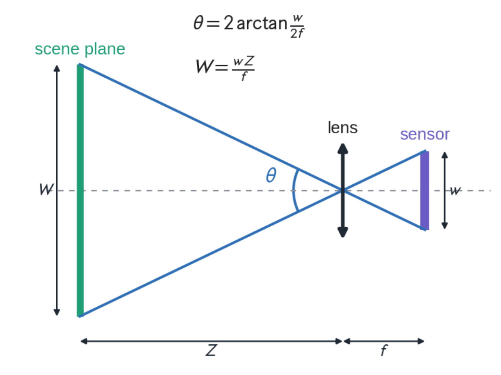
The vertical and diagonal FOV follow from the same formula with the sensor height h or diagonal d = √(w2 + h2) in place of w. When the lens is focused at a finite distance, replace f by the image distance v. Two properties are worth noting. The FOV depends only on the ratio w/f, so a small sensor with a short lens can have the same FOV as a large sensor with a long one. And for small angles the formula reduces to HFOV ≈ 57.3° · w/f, a handy mental estimate.
Table 1.2 Horizontal field of view for combinations of focal length and sensor width.
| Focal length | 1/2.8" (5.57 mm) | 1" (13.2 mm) | APS-C (23.5 mm) | Full frame (36 mm) |
|---|---|---|---|---|
| 2.8 mm | 89.7° | 134.0° | 153.2° | 162.3° |
| 4 mm | 69.7° | 117.6° | 142.4° | 154.9° |
| 8 mm | 38.4° | 79.0° | 111.5° | 132.1° |
| 16 mm | 19.7° | 44.8° | 72.6° | 96.7° |
| 25 mm | 12.7° | 29.6° | 50.3° | 71.5° |
| 50 mm | 6.4° | 15.0° | 26.4° | 39.6° |
| 100 mm | 3.2° | 7.6° | 13.4° | 20.4° |
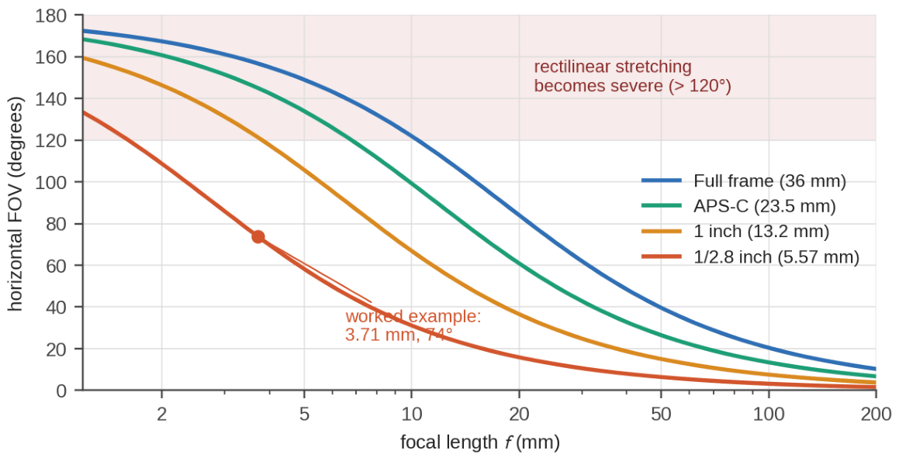
Figure 1.6 explains an important practical point. At long focal lengths, FOV changes slowly and almost linearly with 1/f. At short focal lengths the curve bends and approaches, but never reaches, 180°. A rectilinear lens would need f → 0 to see a full hemisphere, which is the first hint that a different projection is needed for very wide views (Section 1.7).
1.4.2Angle versus footprint
The field of view is an angle, and angles do not depend on distance. What does depend on distance is the footprint: the width of the scene region the sensor covers at distance Z. By similar triangles in Figure 1.5:
Dividing the footprint by the number of pixel columns gives the ground sample distance (GSD), the size of scene that one pixel covers: GSD = p Z/f. It is the quantity that decides whether a feature of a given size is detectable. Doubling the focal length halves the GSD at the same distance, at the cost of halving the footprint.
A camera must cover a 6 m wide scene from 4 m away. The sensor is 1920 pixels wide with 2.9 µm pixels, so w = 5.57 mm. The required horizontal FOV is 2 arctan(3/4) = 73.7°. Solving Equation (1.5) for f gives f = (w/2) /tan(HFOV/2) = 2.784 / 0.75 = 3.71 mm. A stock 3.6 mm or 4 mm lens would be the practical choice, changing the coverage slightly. At 4 m the GSD is 3.12 mm per pixel, so a 20 mm marker would span about 6 pixels.
1.4.3Pixel focal length and the camera matrix
Computer vision rarely uses millimetres. After calibration, a camera is described by its pixel focal length, the focal length expressed in units of pixels:
A scene point (X, Y, Z) in camera coordinates then lands on pixel u = fxX/Z + cx, v = fyY/Z + cy, where (cx, cy) is the principal point, the pixel where the optical axis meets the sensor. These four numbers are the entries of the intrinsic matrix K. For the lens of Worked example 2, fx = 3.71 / 0.0029 = 1280 pixels, which equals 960 /tan(36.9°) as it must.
Three consequences follow. First, fx is a ratio: it does not reveal the physical focal length unless the pixel pitch is known. Second, anything that rescales the image, such as binning, resizing or cropping, rescales fx and moves the principal point, and the matrix must be updated accordingly. Third, focusing, zooming and temperature all change fx, so it is a property of a camera in a particular state, not of a camera in general.
Photographers describe lenses by their "35 mm equivalent" focal length: the focal length that would give the same FOV on a full-frame sensor. It equals f multiplied by the crop factor of Table 1.1. A 4 mm lens on a 1/2.8 inch sensor is therefore roughly a 27 mm equivalent. The concept is a convenient shorthand for comparing FOV; it does not transfer depth of field or noise performance, which depend on the real focal length and pixel size.
ROI and digital crop
Reducing a sensor region of interest narrows the recorded FOV if the ROI crops pixels from the edges. It does not change perspective, focal length, optical magnification, or diffraction. It is equivalent to cropping the full image, except that the camera may read out faster or use less bandwidth.
1.5Focus
1.5.1Only one plane is sharp
The thin-lens equation assigns each object distance u its own image distance v. A sensor sits at one distance, so it can coincide with the sharp image of only one object plane. Points on other planes have their image in front of or behind the sensor, and the sensor intercepts a cone of light instead of a point: a disc called the blur circle or circle of confusion (Figure 1.7).
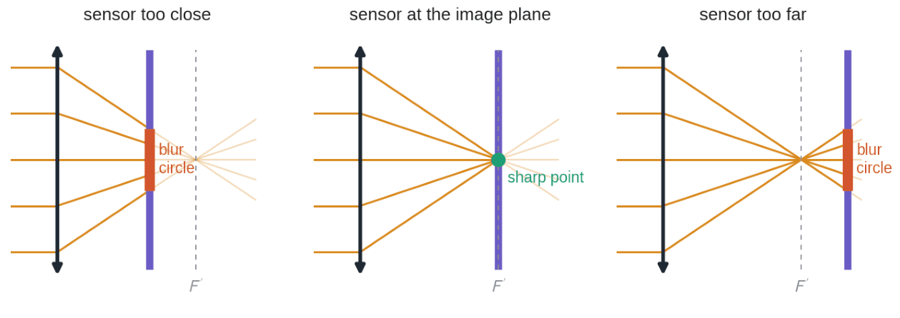
Similar triangles in the light cone give the blur diameter directly. If the aperture has diameter D, the image point lies at distance v′, and the sensor sits at distance v, then
The blur grows linearly with the focus error and with the aperture diameter. Both facts are exploited in practice: closing the aperture (larger N, smaller D) makes focus more forgiving, and a short focal length at a given f-number means a small D and hence small blur for a given error.
1.5.2How much blur is acceptable?
Sharpness is a continuum, so a threshold cmax is chosen below which blur is considered invisible. Photography traditionally uses about 1/1500 of the sensor diagonal, around 29 µm for full frame. For machine vision a more principled choice is one to two pixel pitches: a blur circle of one pixel is indistinguishable from the pixel sampling itself, and two pixels is a common compromise for detection tasks. Tasks that rely on sub-pixel edge localisation, such as calibration or metrology, need the smaller value.
1.5.3Depth of field and hyperfocal distance
The range of object distances for which the blur stays below cmax is the depth of field (DoF). Figure 1.8 shows the geometry. If the lens is focused on distance s, the blur circle of a point at distance u works out to
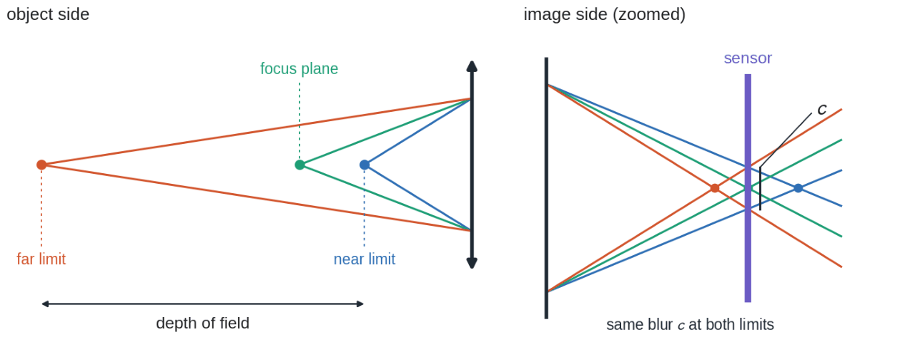
Setting c(u) = cmax and solving for u gives the near and far limits of the sharp zone. They are conveniently expressed through the hyperfocal distance H, the focus distance at which the far limit just reaches infinity:
Focusing at s = H yields the largest sharp zone that still includes infinity, running from about H/2 to ∞. Focusing beyond H wastes depth of field behind infinity. Equation (1.10) tells us how to buy depth of field: it grows with the f-number and the tolerated blur, and falls with the square of the focal length. Short lenses are therefore forgiving, long lenses unforgiving (Figure 1.9b).
Take the lens of Worked example 2 at N = 2.0 with cmax = 2 pixels = 5.8 µm. The hyperfocal distance is H = 3.712 / (2.0 · 0.0058) + 3.71 = 1.19 m. Focused at H, everything from 0.60 m to infinity is sharp. Even focused at 3 m, which lies beyond H, the near limit is 0.85 m. For a lens of this focal length, focus is a one-time factory adjustment rather than a control loop.
Table 1.3 Depth of field for a 25 mm lens, cmax = 4.8 µm (two 2.4 µm pixels), focused at s = 5 m.
| f-number | Hyperfocal H | Near limit | Far limit | Depth of field |
|---|---|---|---|---|
| f/1.4 | 93.0 m | 4.75 m | 5.28 m | 0.54 m |
| f/2.8 | 46.5 m | 4.52 m | 5.60 m | 1.08 m |
| f/5.6 | 23.3 m | 4.12 m | 6.36 m | 2.24 m |
| f/11 | 11.9 m | 3.52 m | 8.62 m | 5.10 m |
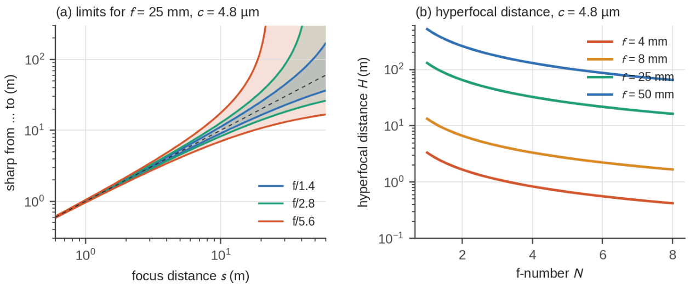
Closing the aperture increases depth of field, but diffraction places a floor on blur. A perfect lens images a point as an Airy disc of diameter about 2.44λN. At 550 nm this is 2.7 µm at f/2, 7.5 µm at f/5.6 and 14.8 µm at f/11, already larger than a 2.9 µm pixel at f/2. For small-pixel sensors the best resolution therefore lies at wide-tomoderate apertures, and depth of field has to come from short focal length rather than from a small aperture.
Depth of field and magnification
At close range, magnification becomes a better predictor of DOF than subject distance alone. Macro imaging can have millimeter-scale or sub-millimeter DOF even at small apertures. For high-magnification inspection, lighting, mechanical flatness, focus stability, and telecentric or specialized macro optics may matter more than nominal megapixels.
1.5.4Where exactly is the sensor plane?
Everything above assumes the sensor sits at distance v behind the lens. In a manufactured camera the allowed error is startlingly small. The image-side counterpart of depth of field is the depth of focus: the range of sensor positions over which blur stays below cmax. It is approximately ±N cmax. For N = 2 and cmax = 5.8 µm that is ±11.6 µm, thinner than a human hair and about a tenth of the thickness of a sheet of paper.
Several effects move the sensor plane, or the plane of best focus, by more than that tolerance:
- Back focal distance and mount tolerances. The distance from the last lens surface to the sensor is set by the mechanical stack of lens barrel, holder, board and sensor package, each with tolerances of tens of micrometres. A common remedy is a threaded lens: an M12 × 0.5 mm thread moves 0.5 mm per turn, or 1.39 µm per degree. The ±11.6 µm focus window above corresponds to only about ±8° of rotation, so the lens is turned while watching a live sharpness measure and then locked with adhesive or a set screw.
- Cover glass and IR-cut filters. A plane-parallel glass plate in the converging beam pushes the focus backwards (Figure 1.10). The longitudinal shift is given by Equation (1.12) below. A 0.7 mm plate of index 1.5 shifts focus by 0.23 mm, twenty times the depth of focus computed above, so lenses are designed for a specific glass stack, and replacing a filter changes the focus.
- Sensor tilt and misalignment. If the sensor is not perpendicular to the optical axis, one side of the image is in focus while the other is not. This shows up as a left-to-right sharpness gradient and is a classic production defect. Active alignment, in which the sensor or lens is adjusted while measuring sharpness at several field positions, is the industrial fix.
- Field curvature. Even a perfect lens does not focus a flat object on a flat sensor; the surface of best focus is slightly curved. Designers balance centre against corner, which is why the sharpest focus setting differs between them.
- Temperature and wavelength. Plastic lens elements change focal length with temperature, and glass dispersion shifts focus between visible and near-infrared light. Cameras for 24-hour use (day and night) need lenses corrected for both, or a focus compromise.
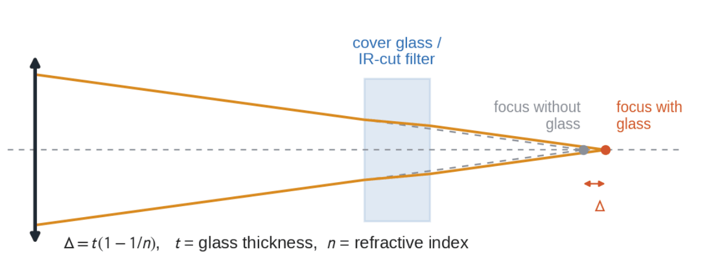
Verify focus numerically, not by eye. A slanted-edge target imaged at the centre and the four corners gives the modulation transfer function (MTF) at each position; the MTF50 value, the frequency at which contrast falls to half, is a robust sharpness score. When no target is available, the variance of the Laplacian of the image is a cheap proxy. Comparing the centre against the corners reveals tilt (asymmetric corners) and field curvature (corners better or worse than centre at every focus setting).
1.6Distortion: leaving the pinhole ideal
Real lenses depart from the straight-line geometry of Equation (1.1). The most common departure is radial distortion, where magnification varies with distance from the optical axis. The standard polynomial (Brown–Conrady) model maps ideal normalised coordinates (x, y) to distorted ones:
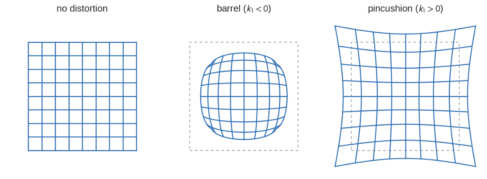
The same relation is applied to y. A second family of terms, tangential distortion, accounts for the lens elements being slightly off-centre. These coefficients are estimated during calibration by imaging a known pattern, usually a checkerboard, from many viewpoints and minimising reprojection error.
The polynomial is well behaved while the field of view stays below roughly 100–120°. Beyond that, the ratio between the true image radius and the pinhole prediction, f tan θ, becomes so large that no low-order polynomial can follow it. That regime calls for a different parametrisation of the projection itself, which is the subject of the rest of the chapter.
Calibration is configuration-specific
Changing focus, zoom, resolution mode, digital crop, lens mount position, or sometimes aperture can alter the effective camera model. If dimensional accuracy matters, calibrate in the final mechanical configuration and validate residual errors over the actual measurement volume.
1.7Fisheye lenses
1.7.1Why rectilinear projection cannot reach 180°
Consider a ray arriving at an angle θ from the optical axis. A rectilinear (pinhole-like) lens places it at image radius r = f tan θ. The tangent diverges as θ approaches 90°: a ray at 80° lands 5.7f from the centre, one at 89° lands 57f, and a ray at 90° never reaches the sensor at all. A rectilinear lens covering 180° would need an infinitely large sensor. The deeper problem is magnification. The radial scale of the image, dr/dθ = f / cos2θ, is 1× on the axis, 4× at 60°, 15× at 75° and 132× at 85°. Objects near the edge of an ultra-wide rectilinear image are stretched radially to many times their size at the centre, while their pixel density per degree grows just as steeply. A wide rectilinear image is correct, but unpleasant to look at and wasteful of sensor area on the periphery.
1.7.2The fisheye idea: choose a different mapping
A fisheye lens abandons the tangent law deliberately. It uses strong barrel distortion, built into the optical design, so that the image radius grows slowly enough with angle that a full hemisphere, or even more, fits on the sensor. In general the lens is described by a monotonic function g:
Several choices of g have become standard (Table 1.4 and Figure 1.12). Each preserves one property of the scene at the expense of the others.
Table 1.4 Standard lens projection models.
| Model | Mapping r(θ) | Preserves | Reaches 180°? | Typical use |
|---|---|---|---|---|
| Rectilinear | f tan θ | straight lines | no (diverges at 90°) | ordinary and wideangle lenses |
| Equidistant | f θ | angles along a radius (uniform pixels per degree) | yes | robotics, SLAM, calibration targets |
| Equisolid angle | 2f sin(θ/2) | area per solid angle | yes | photographic fisheyes, sky imaging |
| Stereographic | 2f tan(θ/2) | local shape (conformal) | yes, stretched at the rim | automotive surround view, security |
| Orthographic | f sin θ | illumination fall-off | no (maximum at 90°) | rare; some hemispheric sensors |
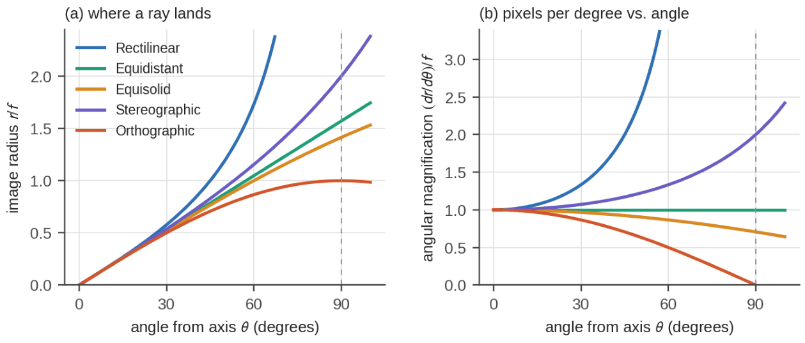
The slope plot in Figure 1.12b is a good way to remember what each model does with your pixels. The equidistant model spends them uniformly across the field. The equisolid and orthographic models spend them most heavily near the centre and thin them toward the edge. The stereographic model does the opposite, which is why it suits cameras that must recognise objects at the periphery, as in vehicle surround view. The slope of the rectilinear model explodes at large angles.
Real fisheye lenses never follow any of these formulas exactly. The ideal models are best seen as starting points for calibration, which refines them with polynomial corrections (Section 1.7.6).
1.7.3What a fisheye image looks like
In a fisheye image straight lines in the world no longer appear straight, with one exception: lines that pass through the optical axis project onto radial lines through the image centre and stay straight. Everything else curves, bending increasingly towards the rim. Figure 1.13 shows a flat wall covered with a square grid under four projection models. The rectilinear panel preserves the grid but can only show a limited field. The three fisheye panels show the wall bending around the centre, with the grid lines crowding towards the rim, where the wall is seen at a grazing angle.
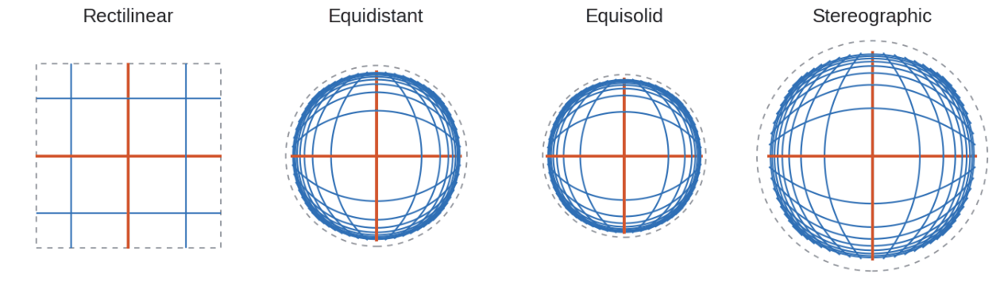
1.7.4Image circle, sensor and what "180°" means
A fisheye lens projects a circular image whose size is a design decision. How that circle relates to the rectangular sensor decides how the lens is used (Figure 1.14 and Table 1.5). In a circular fisheye the image circle fits inside the sensor: a perfect 180° disc surrounded by black. In a diagonal fisheye (also called full-frame fisheye) the circle is larger, so the sensor crops it, and the full 180° is available only along the diagonal. Intermediate designs exist in between.
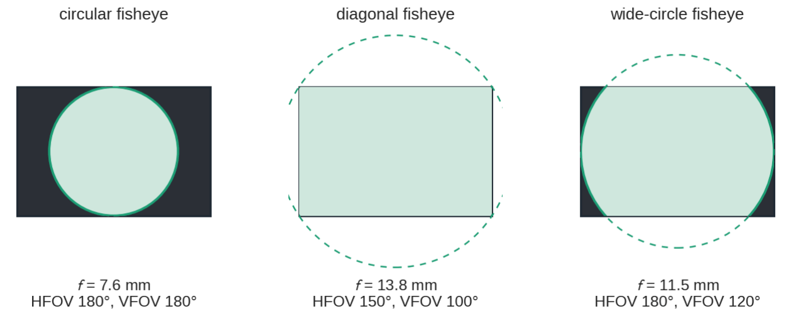
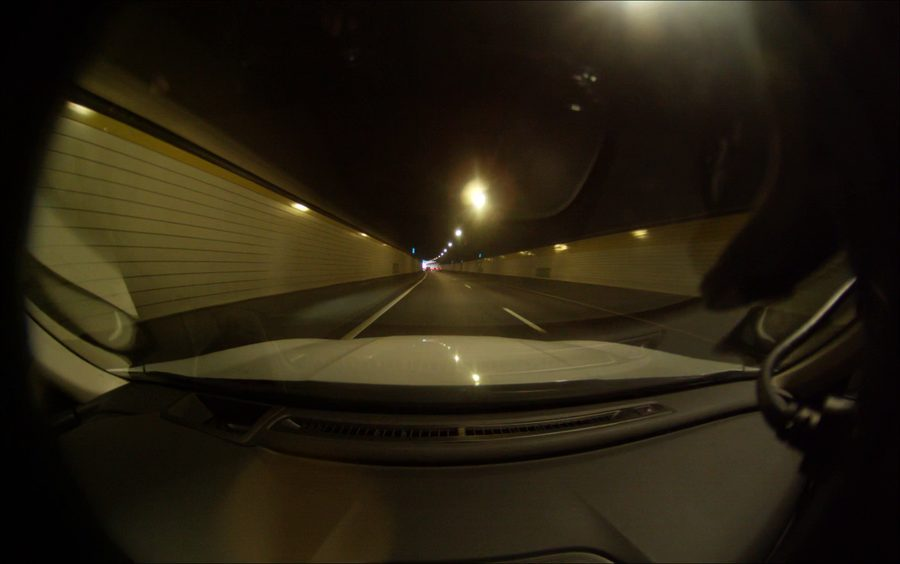
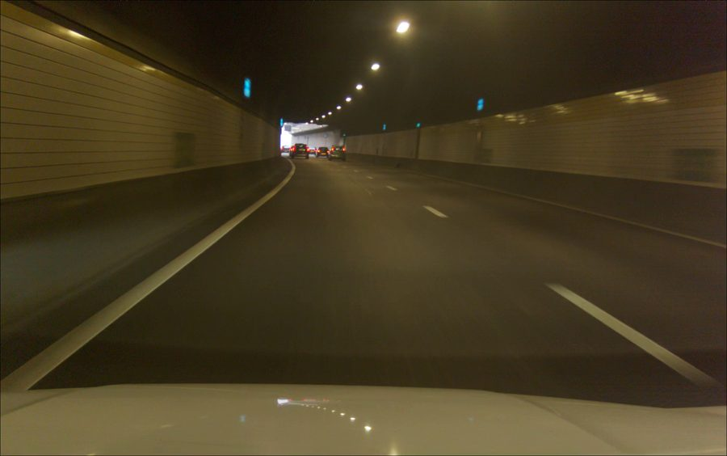
Table 1.5 Equidistant 180° fisheye lenses on a 36 × 24 mm sensor.
| Lens type | Circle radius (mm) | f (mm) | HFOV | VFOV | DFOV |
|---|---|---|---|---|---|
| Circular | 12.0 | 7.6 | 180° | 180° | 180° |
| Diagonal | 21.6 | 13.8 | 150° | 100° | 180° |
| Wide-circle | 18.0 | 11.5 | 180° | 120° | 180° |
When reading a datasheet, check which direction the quoted FOV refers to. A lens advertised as "180°" may reach that value only along the sensor diagonal, and a "190°" lens images rays up to 95° off axis: the front element bulges beyond a hemisphere, and the camera sees slightly behind itself.
1.7.5The pixel budget
Seeing everything has a price, and it is paid in pixels per degree. The local pixel density of a camera follows directly from the mapping:
Consider a 1920 × 1080 sensor with 2.9 µm pixels. An equidistant 180° fisheye whose image circle fits the sensor height has a radius of 540 pixels, so f = 1.57 mm / (π/2) = 1.00 mm and the density is uniform at 6.0 pixels per degree everywhere. A rectilinear lens covering a 90° horizontal FOV on the same sensor has fx = 960 pixels, which means 16.8 pixels per degree at the centre and 33.5 at 45°. A 1.7 m pedestrian standing 5 m away subtends 19.3°, which is about 116 pixels tall in the fisheye image and 326 pixels on the optical axis of the rectilinear one.
Neither number is wrong; they are different compromises. The fisheye camera replaces several narrow cameras with one at the price of resolution per object, and the rectilinear camera concentrates its pixels on a narrower cone. When detection range is the requirement, the pixel density in the region of interest decides the choice of lens, and it is worth asking for a custom mapping that allocates more pixels to the important angles.
1.7.6Calibration and working with fisheye images
Calibration of a fisheye camera follows the same recipe as for a pinhole camera, but with a model whose radial mapping can describe more than 90°. The most widely used is the polynomial model of Kannala and Brandt, implemented in OpenCV's fisheye module. With a = X/Z, b = Y/Z, r = √(a2 + b2) and θ = arctan r:
The pixel coordinates are then u = fx(θd/r)a + cx and v = fy(θd/r)b + cy. Note what has changed compared with Equation (1.13): the polynomial acts on the angle θ, which stays finite for all rays, instead of on the radius r of the normalised image plane, which does not. Other popular models are Scaramuzza's polynomial for omnidirectional cameras, the unified spherical model of Mei and Rives, and the double-sphere model of Usenko and colleagues, which has few parameters, a closed-form inverse and fits strong wide-angle lenses well.
Four practical points save a great deal of trouble:
- Work with rays, not normalised image points. For fields of view near or beyond 180° the division by Z fails, because points at or behind the camera plane (Z ≤ 0) are visible. Back-project pixels to unit direction vectors on the sphere and run geometry (triangulation, bundle adjustment, ray casting) on those.
- Calibrate across the whole field. Place the target so that corners of the pattern reach the rim of the image circle. A calibration done only on the central region extrapolates badly where it matters most.
- Be careful when undistorting. Converting a fisheye image to a single perspective view reintroduces the stretching of Section 1.7.1: a 120° perspective crop already has edges magnified 4×. Prefer several virtual perspective views (a cube map), a cylindrical projection or an equirectangular panorama, and keep the original image for any metric computation.
- Remember that the centre of projection moves. In real fisheye lenses the entrance pupil shifts with field angle, so rays do not all pass through one point. For objects farther than about a metre the error is negligible; for close-range metrology it is not. Light fall-off (vignetting) and lateral chromatic aberration are also much stronger than in normal lenses and are worth modelling.
1.7.7Focus with fisheye lenses
Fisheye lenses have very short focal lengths, which makes them extremely forgiving. The lens of the previous section has f = 1.00 mm; at N = 2 and cmax = 5.8 µm, Equation (1.10) gives a hyperfocal distance of just 87 mm. Focus the lens at that distance, and everything beyond 43 mm is sharp. The flip side is that the short back focal distance makes the sensor-plane positioning described in Section 1.5.4 critical: with such a short lens, a few micrometres of tilt produces visible blur in one part of the image.
1.8Putting it together: a lens-selection workflow
The concepts of this chapter combine into a short procedure for choosing and verifying optics for a vision camera.
- Define the field of view from the scene geometry: the width and height to cover at the working distance, or the angular coverage required. Include margin for mounting error.
- Fix the smallest feature to be detected and the number of pixels it needs. Together with the working distance, this sets the required GSD, and hence the pixel focal length fx (Equations 1.6 and 1.7).
- Pick the sensor (size, resolution, pixel pitch) so that the FOV and pixel focal length are both achievable. Then compute the physical focal length f = fx · p.
- Decide the projection. If the horizontal FOV exceeds about 100°, move to a fisheye model, and check the pixel density at the edge of the region of interest, not just at the centre.
- Set the aperture and focus. Choose N from the light budget and diffraction limit, then compute H and the depth of field from Equations (1.10) and (1.11). For short lenses, focus at the hyperfocal distance.
- Budget the mechanics. Compare the depth of focus ±N cmax against the stack-up of tolerances, the cover-glass shift of Equation (1.12) and thermal drift. Decide whether active alignment or a focusing thread is required.
- Calibrate and verify. Calibrate intrinsics at the operating focus and temperature, measure MTF in the centre and at the corners, and verify that the reprojection error is consistent across the whole field.
2Real lenses: aperture, aberrations and resolution
Chapter 1 treated the lens as one thin, perfect element. Real lenses admit a finite cone of light, bend colours differently, blur off-axis points, and feed a sampled sensor. These effects decide how much detail actually survives.
2.1Aperture and f-number
The aperture controls the diameter of the entrance pupil, which sets the angular cone of rays admitted from each object point. The f-number N is defined as focal length divided by entrance-pupil diameter D:
A lower f-number generally increases sensor irradiance, reduces exposure time requirements, and can reduce motion blur. It also decreases depth of field and often exposes more off-axis aberrations. A higher f-number increases depth of field and can improve aberration-limited sharpness, but eventually diffraction becomes dominant.
Exposure scaling
Ignoring losses, irradiance at the image plane scales approximately with 1/N2. Moving from f/4 to f/2 doubles the aperture diameter and admits roughly four times as much light, corresponding to two photographic stops. Real transmission is described more accurately by T-stop, which includes optical losses.
Diffraction
Even a perfect circular aperture creates a diffraction pattern. The diameter of the central Airy disk to the first minimum is approximately:
At wavelength λ = 550 nm, the Airy diameter is about 2.7 µm at f/2, 5.4 µm at f/4, 10.7 µm at f/8, and 21.5 µm at f/16. On a sensor with 3 µm pixels, stopping down to f/16 spreads the diffraction spot across many pixels even before lens aberrations or defocus are considered.
2.2What is inside a real lens?
A real camera lens contains multiple refractive elements, air gaps, an aperture stop, and sometimes moving focusing or zoom groups. The elements are shaped and made from different glasses so that one element can partially cancel an aberration introduced by another. A modern lens is therefore an optimization over many competing goals: FOV, aperture, distortion, color correction, corner performance, working distance, size, cost, and manufacturability.
Principal planes and effective focal length
The thin-lens drawing places all refraction in one plane. A multi-element lens has principal planes that may lie inside or even outside the physical glass stack. Distances in Gaussian optics are measured relative to these effective planes, not necessarily from the front element or mechanical mount shoulder.
Image circle
A lens projects a circular usable image region. The sensor must fit inside that image circle with acceptable illumination and sharpness. A lens designed for a smaller sensor may vignette or show poor corners on a larger sensor. Conversely, using a large-format lens on a smaller sensor often uses only its central region, though the lens may be larger and more expensive than necessary.
2.3Aberrations: why real lenses are not ideal
Aberrations are failure modes of the ideal mapping, each with its own signature. They usually vary with field position, aperture, wavelength and focus distance, which is why a lens can be excellent in the centre and soft in the corners.
Spherical aberration
Spherical surfaces do not bring all rays from an on-axis point to exactly the same focus. Marginal rays and paraxial rays may focus at different axial positions. Stopping down blocks the outer rays and often improves sharpness, which is one reason many lenses improve from wide open to a moderate f-number.
Chromatic aberration
Glass refractive index varies with wavelength. Different colors therefore bend by different amounts. Longitudinal chromatic aberration shifts the best focus with wavelength; lateral chromatic aberration changes image scale with wavelength and often appears as colored fringes toward the image edges. Achromatic and apochromatic lens groups use multiple glasses and powers to reduce these errors.
Coma and astigmatism
Coma affects off-axis point sources, producing asymmetric comet-like blur. Astigmatism causes tangential and sagittal rays to focus differently, so line orientation matters. These effects are important for corner resolution and can make an image look sharp in one direction but soft in another.
Field curvature
A lens may focus sharply on a curved surface rather than a plane. A flat sensor cannot follow that surface, so center and corners may not be simultaneously optimal. Stopping down increases DOF and can partly hide field curvature.
Vignetting
Vignetting is brightness falloff toward the image corners. It can come from mechanical clipping, pupil geometry, and the cos4 illumination tendency of imaging systems. Flat-field correction can normalize brightness, but it also amplifies noise in darker regions and cannot recover clipped rays or lost SNR.
Flare and ghosts
Some image defects do not come from the imaging mapping at all but from stray light. Every glass–air surface reflects a little light: about 4 % for uncoated glass of index 1.5, typically well under 1 % with an anti-reflection coating. Light reflected twice, once backwards and once forwards again, reaches the sensor as a ghost, an out-of-focus image of a bright source, often tinted by the coatings and shaped by the aperture. Light scattered by the barrel wall, edges, dust and the coatings adds veiling glare, a haze that lowers contrast around the source. In a rotationally symmetric lens a ghost always lies on the line through the source and the optical centre (Figure 2.2), which is how ghosts are told apart from real objects. For a vehicle camera this matters because a low sun or oncoming headlights can produce blobs a detector may take for lights or objects; coatings, blackened barrels and baffles reduce it, and validation sweeps a bright source across the field to measure what is left.
2.4Resolution: optics and pixels form one system
Megapixels alone do not determine resolved detail. The scene passes through the optical transfer function of the lens, is blurred by diffraction and defocus, then sampled by pixels with finite area and often a color filter array. Effective system resolution is the combined result.
Pixel pitch and object-space sampling
If a scene width W maps to Nx pixels, the nominal sampling is W/Nx units per pixel at that plane. For reliable detection, a feature generally needs multiple samples across it. The exact number depends on contrast, optics, noise, algorithm, and whether the task is detection, classification, or metrology.
For example, if a 0.5 mm defect must be represented by at least 5 pixels, the required nominal scale is 0.1 mm/pixel or finer. A 2048-pixel sensor can then cover at most about 205 mm across the relevant dimension before optical margins are included.
Nyquist frequency
Sampling theory says a periodic signal must be sampled at more than twice its spatial frequency to avoid aliasing. A pixel pitch p gives a sensor Nyquist frequency of 1/(2p) cycles per unit distance on the sensor. But a lens should not merely reach Nyquist at vanishing contrast; useful performance is usually considered through MTF at relevant spatial frequencies.
Modulation transfer function (MTF)
MTF describes how contrast is transferred versus spatial frequency. Low-frequency MTF relates to broad contrast; high-frequency MTF relates to fine detail. Lens MTF varies with field position, aperture, wavelength, focus distance, and orientation. System MTF is approximately the product of the optical MTF and sensor/sampling contributions, so a weak component limits the whole chain.
Diffraction versus aberrations: an optimum aperture
Opening the aperture tends to increase aberrations and reduce DOF. Closing it suppresses aberrations and increases DOF, but increases diffraction blur. Many lenses therefore have a middle aperture range where center and corner sharpness are best. The optimum depends on pixel pitch and task; there is no universal "sharpest f-number."
3Geometry choices for measurement
Where the camera stands, what kind of lens it carries, and how one goes from a requirement to a lens.
3.1Perspective, camera position and focal length
A common statement says that wide lenses exaggerate perspective and telephoto lenses compress it. The underlying cause is camera position. Perspective is the ratio of distances from the camera to scene points. If the camera does not move, changing focal length changes framing but not the projective relationship between scene points; cropping a wide-lens image to match a telephoto framing gives nearly the same perspective.
In system design, choose the camera position for geometry, occlusion, perspective, and working distance first. Then choose focal length to obtain the required FOV on the selected sensor.
3.2Telecentric lenses for measurement
Conventional lenses are entocentric: magnification changes with object distance. This is normal perspective. For dimensional metrology, a small height change can therefore look like a size change. Object-space telecentric lenses restrict accepted chief rays so they are approximately parallel in object space, making magnification much less sensitive to object distance over a specified telecentric range.
Telecentric lenses are larger and more expensive for a given FOV because the entrance optics must be at least comparable to the object field size. They are not simply "better" lenses; they solve a specific geometry problem. Use them when measurement stability, edge localization, or depth-dependent magnification error dominates cost and size constraints.
3.3Worked design example: an inspection camera
Suppose a conveyor inspection system must cover 400 mm horizontally. The camera can be placed 600 mm from the product. The selected sensor is 12.3 mm wide with 4096 horizontal pixels. A 1.0 mm defect should span at least 8 pixels.
Sampling requirement
At 400 mm FOV and 4096 pixels, nominal sampling is 400/4096 = 0.0977 mm/pixel. A 1.0 mm defect spans about 10.2 pixels, which satisfies the 8-pixel target before optical losses. This leaves some margin for blur and contrast reduction.
Focal length estimate
Using \(f \approx Z\,S/W\) (working distance × sensor width / field width):
An 18 mm or 20 mm lens would be a natural starting point. Exact coverage should be checked with the real sensor active area, actual working distance definition, lens distortion, and focus breathing.
Depth of field and aperture
If products vary in height by ±15 mm, the lens must preserve enough contrast across that depth. Closing the aperture may supply adequate DOF, but the required exposure time may become too long for conveyor motion. The correct trade is therefore optical plus illumination: increase lighting, use strobed light, or adjust geometry rather than assuming aperture alone solves the problem.
Calibration
For measurement, calibrate the lens at the production focus and working distance. If the objects are not planar, perspective causes scale to vary with depth; either compensate using 3D geometry/depth information or use telecentric optics if the required accuracy justifies them.
3.4Lens selection as a checklist
Section 1.8 gave the workflow in seven steps. The same process as a checklist, each step with the question it answers and what it fixes in the design:
| Step | Question | Design consequence |
|---|---|---|
| 1. Define object-space task | What smallest feature must be detected or measured? What accuracy is required? | Sets required pixels per feature and acceptable optical blur. |
| 2. Define FOV | What physical width/height must be visible? | Sets object-space sampling when combined with pixel count. |
| 3. Choose sensor format | What active width/height and pixel pitch are available? | Links desired FOV to focal length and sampling density. |
| 4. Set working distance | Where can the camera physically be placed? | Controls perspective, occlusion, required focal length, and lighting geometry. |
| 5. Estimate focal length | Use \(f \approx Z\,S/W\) as a starting point. | Narrows lens candidates; verify exact FOV with manufacturer data. |
| 6. Check image circle and mount | Does the lens cover the sensor and fit the flange/back-focus constraints? | Prevents corner clipping and mechanical incompatibility. |
| 7. Check optical resolution | Is MTF adequate at the sensor spatial frequency and field position? | Prevents wasting pixel count on unresolved detail. |
| 8. Check DOF / aperture | What depth range must remain sufficiently sharp? | Sets f-number, lighting level, exposure, and perhaps lens type. |
| 9. Check distortion / telecentricity | Can distortion be calibrated? Is magnification invariance required? | Determines rectilinear, low-distortion, or telecentric requirement. |
| 10. Validate experimentally | Test edge cases, corners, temperature, vibration, production tolerances. | Converts a nominal optical design into a reliable system. |
4Summary and formula reference
4.1Summary
A camera maps rays to pixels in two stages: the lens redirects the rays, and the sensor plane samples them. Field of view, focus and projection law are three different aspects of the first stage, and the position of the sensor plane determines how well the second stage can use what it receives.
- A lens bends rays from each scene point to a common image point; the sensor must lie in the plane that contains those points. The thin-lens equation links object distance, image distance and focal length.
- FOV = 2 arctan(w/2f) depends only on the ratio of sensor size to focal length. The footprint on the scene grows with distance; the pixel focal length fx = f/p is the quantity that calibration reports.
- Only one plane is in perfect focus. Blur grows linearly with focus error and with aperture diameter; depth of field grows with the f-number and shrinks with the square of the focal length.
- The sensor plane has to be located to within a few micrometres. Cover glass, tilt, field curvature and temperature all move it or the plane of best focus.
- Rectilinear lenses cannot reach 180°. Fisheye lenses use mappings r = f g(θ) with finite value at 90°, trading straight lines for field of view and giving a characteristic pixel-density profile.
- For wide fields of view, calibrate with angle-based models and use ray directions instead of normalised image coordinates.
4.2A compact mental model
When reasoning about a camera, separate the problem into six questions:
- What angle is seen? Use sensor dimensions and focal length to determine FOV.
- What physical region is seen? Combine FOV with camera position and working distance.
- Where is it sharp? Use focus geometry and a task-specific acceptable blur to reason about DOF.
- How much light reaches the sensor? Aperture, transmission, exposure time, illumination, and sensor quantum efficiency determine signal level.
- How much detail survives? Combine optical MTF, diffraction, defocus, motion blur, pixel aperture, sampling, and noise.
- How accurate is the geometry? Perspective, distortion, calibration stability, mechanics, and telecentricity determine measurement fidelity.
Once these questions are kept separate, lens selection becomes much less mysterious. Focal length is primarily a geometry variable; aperture is primarily a light/DOF/diffraction variable; focus chooses the conjugate plane; sensor format sets the physical image area; pixel pitch sets sampling; and the detailed lens design determines how closely the real system approaches the ideal model.
4.3Formula reference
| Quantity | Formula | See |
|---|---|---|
| Perspective projection | \(x = fX/Z,\;\; y = fY/Z\) | Eq. 1.1 |
| Thin lens | \(1/f = 1/u + 1/v\) | Eq. 1.2 |
| Magnification | \(m = -v/u\) | Eq. 1.3 |
| Focus extension | \(\Delta = f^2/(u - f)\) | Eq. 1.4 |
| Horizontal FOV | \(2\arctan(w/2f)\) | Eq. 1.5 |
| Scene footprint | \(W = w\,u/v \approx wZ/f\) | Eq. 1.6 |
| Pixel focal length | \(f_x = f/p\) | Eq. 1.7 |
| Blur circle | \(c = D\,|v' - v|/v'\) | Eq. 1.8 |
| Hyperfocal distance | \(H = f^2/(N c) + f\) | Eq. 1.10 |
| Depth of field limits | \(s(H - f)/(H + s - 2f),\;\; s(H - f)/(H - s)\) | Eq. 1.11 |
| Glass focus shift | \(\Delta = t\,(1 - 1/n)\) | Eq. 1.12 |
| General projection | \(r = f\,g(\theta)\) | Eq. 1.14 |
| Pixel density | \(\rho = (f/p)\,g'(\theta)\) | Eq. 1.15 |
| f-number | \(N = f/D\) | §2.1 |
| Exposure | \(\propto 1/N^2\) | §2.1 |
| Airy disc diameter | \(d \approx 2.44\,\lambda N\) | §2.1 |
| Object-space sampling | \(W/N_x \text{ per pixel}\) | §2.4 |
| Sensor Nyquist | \(\nu_N = 1/(2p)\) | §2.4 |
4.4Numbers worth remembering
| Quantity | Typical value |
|---|---|
| Airy disc diameter at 550 nm | 2.7 µm at f/2, 5.4 µm at f/4, 10.7 µm at f/8 |
| Sensor Nyquist frequency | 1/(2p): 167 lp/mm for 3 µm pixels, 238 lp/mm for 2.1 µm |
| Depth of focus at f/2, cmax = 6 µm | about ±12 µm |
| Hyperfocal distance, f = 4 mm, f/2, cmax = 6 µm | 1.34 m (sharp from 0.67 m to infinity) |
| Focus extension to 1 m | 16 µm for a 4 mm lens, 2.6 mm for a 50 mm lens |
| Focus shift of a glass plate | t(1 − 1/n): 0.23 mm for 0.7 mm of n = 1.5 glass |
| Rectilinear edge stretch | 1/cos²θ: 4× at 60° off axis (a 120° view) |
| Equidistant fisheye, f = 1 mm, p = 3 µm | 333 px/rad, about 5.8 px per degree everywhere |
| One photographic stop | factor √2 in N, factor 2 in light |
QSelf-check questions
Short model answers first, then questions that check understanding with why and what if, the common misconceptions and a few exercises to work on paper.
Q.1Core questions
What does the focal length decide, and what does it not decide?Basic
Together with the sensor size, the focal length sets the field of view (HFOV = 2 arctan(w/2f)) and the magnification: how many pixels an object of a given size occupies at a given distance. It does not decide perspective, which comes from where the camera stands, and it does not by itself decide how much light arrives, which is set by the f-number N = f/D. A "wide" lens is only wide relative to a sensor: 4 mm is a normal lens on a 1/4-inch sensor and an extreme wide-angle on full frame.
How do you get the field of view and the pixel focal length from a datasheet?Basic
Take the active sensor width w = Wpx · p from the pixel count and pitch, not from the "inch" format name. Then HFOV = 2 arctan(w/2f) and fx = f/p. For 1920 pixels of 3.0 µm (w = 5.76 mm) behind a 4 mm lens, HFOV = 2 arctan(0.72) = 71.5° and fx = 1333 px. The datasheet focal length is nominal (often ±5%), so calibration replaces it with a measured fx.
What is depth of field and which quantities control it?Basic
It is the range of object distances whose blur circle stays below a chosen limit cmax; only one plane is truly sharp. It grows with the f-number, shrinks roughly with the square of the focal length, grows with focus distance, and depends on how strict cmax is (for machine vision usually one or two pixels). The hyperfocal distance H = f²/(N cmax) + f summarises all of it.
What is the hyperfocal distance and why do most car cameras use fixed focus?Intermediate
H is the focus distance at which the far limit of the sharp zone just reaches infinity; focused there, everything from about H/2 to infinity is acceptably sharp. Car cameras have short focal lengths, so H is small: f = 4 mm, f/2 and cmax = 6 µm give H ≈ 1.34 m and a sharp zone from about 0.67 m to infinity. With no moving parts the focus cannot drift with vibration, and the lens is glued in place after active alignment at the factory.
Why can a rectilinear lens not reach 180°, and what does a fisheye do instead?Intermediate
A rectilinear lens maps a ray at angle θ to radius r = f tan θ, which goes to infinity at 90°: a ray at 80° already lands 5.7 f from the centre and the edge of a 120° view is magnified four times relative to the centre. A fisheye chooses a different mapping r = f g(θ) whose value stays finite at 90° (equidistant f θ, equisolid 2f sin(θ/2), stereographic 2f tan(θ/2)), so a hemisphere or more fits on the sensor at the price of bent straight lines.
Compare the standard fisheye projection models.Intermediate
All agree near the axis. Equidistant (f θ) gives uniform pixels per degree, which suits SLAM and calibration. Equisolid (2f sin(θ/2)) preserves area per solid angle and is common in photographic fisheyes. Stereographic (2f tan(θ/2)) is conformal, so local shapes look natural, and surround-view lenses are often close to it; it spends more pixels at the rim. Orthographic (f sin θ) stops at 90°. Real lenses follow none exactly; the model is the start point for a polynomial correction in calibration.
What is the difference between distortion and blur?Basic
Distortion moves image points: magnification depends on the distance from the axis, so straight lines bend, but each point can still be sharp. It is a deterministic geometric error that calibration models and a remap removes. Blur spreads one point over several pixels (defocus, diffraction, aberrations such as coma or chromatic aberration); it loses information that no calibration restores.
Why does stopping down eventually make the image softer?Intermediate
A smaller aperture reduces aberrations and increases depth of field, but diffraction spreads a point into an Airy disc of diameter about 2.44 λ N. At 550 nm that is 2.7 µm at f/2 and 10.7 µm at f/8, already more than three 3 µm pixels. Every lens therefore has an optimum aperture, usually two or three stops below wide open, and small-pixel sensors push that optimum towards larger apertures.
Why are megapixels not the same as resolution? What is MTF?Intermediate
The scene passes through the lens's optical transfer function, defocus and diffraction before the pixels sample it, so the detail that survives is the product of all stages. The modulation transfer function (MTF) gives the contrast transferred at each spatial frequency; MTF50 is a common single number. A sensor with pitch p samples up to the Nyquist frequency 1/(2p), about 167 line pairs per millimetre for 3 µm pixels; if the lens's MTF there is near zero, the extra pixels only resample blur.
How accurately must the sensor sit, and what moves the plane of best focus?Advanced
The image-side tolerance, the depth of focus, is about ±N cmax: at f/2 and 6 µm that is ±12 µm. Things that move focus by more than that: the mechanical stack of barrel, holder, board and sensor package (tens of micrometres each), a cover glass or IR filter (shift t(1 − 1/n), 0.23 mm for 0.7 mm of n = 1.5 glass), sensor tilt, field curvature, temperature (plastic elements and housing expansion) and wavelength (visible versus near infrared). That is why automotive cameras are actively aligned and glued while the image is measured.
When must a camera be recalibrated?Intermediate
Whenever the mapping from rays to pixels changes: refocusing (the image distance v changes the effective focal length), a different resolution mode, binning, scaling or crop (fx, fy and the principal point rescale or shift), a lens or holder change, and mechanical creep over temperature and age. Calibrate in the final mechanical and sensor configuration, and convert intrinsics analytically for pure scaling or cropping instead of guessing.
How many pixels per degree does a fisheye deliver, and where?Advanced
The local density is ρ(θ) = (f/p) g′(θ) pixels per radian. For an equidistant lens it is constant: f = 1 mm and p = 3 µm give 333 px/rad, about 5.8 px per degree everywhere. A rectilinear lens has g′ = 1/cos²θ, so it concentrates pixels at the edge, while equisolid and orthographic lenses thin them out towards the rim. The density at the edge of the region of interest, not at the centre, decides whether a pedestrian at the side is detectable.
What is the chief ray angle and why does it matter for a sensor?Advanced
The chief ray is the ray from an image point through the centre of the aperture stop; its angle at the sensor grows towards the corners for compact lenses. Sensor microlenses are shifted to accept a specified chief-ray-angle profile. A lens whose CRA does not match loses light and leaks it into neighbouring colour pixels at the corners, giving colour shading and crosstalk that the ISP can only partly correct. CRA compatibility is one of the first checks when pairing a lens and a sensor.
Why do fisheye calibration models use the angle θ instead of the image radius?Advanced
The Brown–Conrady polynomial acts on the normalised radius r = tan θ, which diverges at 90°, so it cannot describe rays at or beyond the side of the camera. Kannala–Brandt (OpenCV fisheye) writes θd = θ(1 + k1θ² + …), a polynomial in the angle, which stays finite for every ray. For fields near or beyond 180° one also works with unit ray directions rather than x/z, because points with z ≤ 0 are visible.
When would you choose a telecentric lens?Intermediate
For dimensional measurement where the object distance varies: in a normal (entocentric) lens magnification changes with distance, so a part that is 1 mm higher looks larger. An object-space telecentric lens puts the stop at the focal point so chief rays are parallel to the axis and magnification stays constant over its telecentric range. The front optics must be as large as the field, so these lenses are big and expensive and suit inspection, not vehicles.
Q.2Why and what if
What if you put a larger sensor behind the same lens?What if
The field of view grows only as far as the lens's image circle reaches. Beyond it the corners go dark (vignetting) or soft, because the lens was corrected only for the smaller field. The chief ray angle at the new corners may also exceed what the microlenses accept. Coverage, resolution and CRA have to be checked separately.
Why does focusing closer narrow the field of view?Why
The angle the sensor subtends is set by the image distance v, not by f. Focusing closer moves the lens away from the sensor (v = f u/(u − f)), so the same sensor width spans a smaller angle. This focus breathing is a few per cent for a 50 mm lens at 1 m and negligible for a 4 mm lens, whose extension at 1 m is only 16 µm.
What if a fixed-focus camera with plastic lens elements runs from −40 °C to +105 °C?What if
Refractive index and element spacing change with temperature, and the housing expands, so the plane of best focus moves. If the shift exceeds the depth of focus (about ±N cmax, a few tens of micrometres), the image softens at one end of the range even though it was sharp at room temperature. Remedies are glass-plastic hybrid or athermalised designs, housing materials chosen to compensate, and MTF tests in a climate chamber.
Why is the sharp zone deeper behind the focus plane than in front of it?Why
Image distance depends on 1/u, not on u. Near the camera a small change in object distance moves the image a lot; far away even a large change moves it little. With the same tolerable blur at both limits, the far limit therefore lies further from the focus plane than the near limit; at the hyperfocal distance the far side reaches infinity.
What if you undistort a 190° fisheye image into one perspective image?What if
It is impossible to show the full field: rays at 90° and beyond have no rectilinear image. Even a 120° perspective crop magnifies its edges four times relative to the centre, so edge pixels are interpolated from very few source pixels and look smeared. Use several virtual perspective views, a cylindrical projection, or run the algorithm on rays directly.
What if you halve the pixel pitch on the same sensor area?What if
The Nyquist frequency doubles, so the lens must now deliver contrast at twice the frequency or the new pixels resolve nothing extra. A blur limit of two pixels halves in micrometres, so depth of field shrinks and H doubles. Each pixel collects about a quarter of the light, so per-pixel noise in low light rises. Diffraction becomes the limit at a wider aperture.
Why does a short focal length make fixed focus practical?Why
The focus extension Δ = f²/(u − f) and the hyperfocal distance both scale with f². A 4 mm lens moves 16 µm between infinity and 1 m, which is inside its depth of focus; a 50 mm lens moves 2.6 mm. Short lenses can therefore be set once to the hyperfocal distance and cover everything from well under a metre to infinity.
What if you read out only a region of interest of the sensor?What if
The field of view narrows exactly as if the image had been cropped, but perspective, focal length, magnification and diffraction are unchanged. The principal point shifts by the crop offset and fx stays the same, so intrinsics can be converted rather than recalibrated, provided the binning or scaling stage is also accounted for.
Why does replacing an IR-cut filter with one of a different thickness defocus the camera?Why
A plane glass plate in the converging beam pushes focus back by t(1 − 1/n). A 0.3 mm thickness change in n = 1.5 glass moves focus by 0.1 mm, several times the depth of focus of an f/2 lens with small pixels. Day/night cameras that swap the filter mechanically compensate with a clear plate of equal optical thickness.
Why do two cameras with the same focal length but different sensors give different pictures from the same spot?Why
Perspective is identical because it depends only on position. The field of view differs because the sensor width differs (crop factor), and the depth of field differs because the acceptable blur scales with the pixel size and format. To get the same framing on the smaller sensor you need a shorter lens, which then gives more depth of field at the same f-number.
Q.3Common misconceptions
| Misconception | What is actually true |
|---|---|
| "More megapixels gives a wider view." | FOV is set by active sensor dimensions and lens projection. More pixels on the same area increase sampling density. |
| "A longer lens changes perspective." | Perspective changes primarily because the camera position changes. Focal length changes framing from that position. |
| "Everything inside DOF is equally sharp." | Only one object plane is exactly focused. DOF is an acceptable-blur range. |
| "Stopping down always makes the image sharper." | Stopping down reduces aberrations and increases DOF, but diffraction eventually reduces fine detail. |
| "Distortion means the lens is blurry." | Distortion is geometric displacement. A distorted image can still be locally sharp. |
| "A lens marked for a sensor size has the right resolution." | Coverage and resolution are separate. The lens may cover the sensor but have insufficient MTF for its pixel pitch. |
| "Calibration removes all lens errors." | Calibration corrects modeled geometry. It does not restore lost resolution, SNR, vignetting, flare, or unstable mechanics. |
Q.4Exercises
Work them on paper first; open a question for the answer.
A 1 inch sensor (13.2 mm wide) is paired with a 25 mm lens. What is the horizontal FOV, and how wide a scene does it cover at 10 m?
HFOV = 2 arctan(13.2/50) = 29.6°; footprint at 10 m ≈ 13.2 · 10 / 0.025 = 5.28 m (more precisely w u/v, which differs by 0.25%).
A 25 mm lens is focused first at infinity and then at 1 m. How far must it move? What happens to the horizontal FOV?
\(\Delta = 25^2/975 = 0.64\) mm. The image distance becomes 25.64 mm, so the HFOV falls from 29.6° to 28.9° (focus breathing).
For the 3.71 mm lens of Worked example 2 at f/2.8 instead of f/2.0, what are the hyperfocal distance and the near limit when focusing at that distance?
\(H = 3.71^2/(2.8 \cdot 0.0058) + 3.71 = 852\) mm; focusing there gives a near limit of 426 mm.
An equidistant fisheye has f = 1.2 mm and p = 2.0 µm. How many pixels does a 90° ray lie from the image centre, and how many pixels per degree does the lens deliver?
\(r = f\theta/p = 600 \cdot \pi/2 = 942\) pixels; density \(= 600 \cdot \pi/180 = 10.5\) pixels per degree.
Show that, for a rectilinear lens, the radial magnification at 60° from the axis is four times that on the axis.
\(dr/d\theta = f/\cos^2\theta\); at 60° \(\cos^2\theta = 0.25\), so the magnification is \(4f\).
GGlossary
- Airy disc
- The diffraction pattern of a point through a circular aperture; its central spot is about 2.44 λ N wide, the floor on blur when stopping down.
- Aperture stop
- The opening inside the lens that limits the cone of light from each object point; its image seen from the front is the entrance pupil.
- Back focal distance
- Distance from the last lens surface to the image plane; with the mount's flange distance it decides whether a lens can focus on a given camera.
- Blur circle (circle of confusion)
- The disc a defocused point makes on the sensor, c = D |v′ − v| / v′; the acceptable limit cmax defines depth of field.
- Chief ray angle (CRA)
- Angle at the sensor of the ray through the centre of the aperture stop; must match the microlens design of the sensor or corners lose light and colour.
- Chromatic aberration
- Wavelength-dependent focus (longitudinal) or magnification (lateral), caused by the dispersion of glass; shows as colour fringes.
- Crop factor
- Ratio of the full-frame diagonal (43.3 mm) to a sensor's diagonal; multiplies f to give the 35 mm equivalent focal length.
- Depth of field (DoF)
- Range of object distances whose blur stays below cmax; grows with N and focus distance, shrinks with f².
- Depth of focus
- The image-side tolerance: how far the sensor may move from the image plane, about ±N cmax.
- Distortion
- Geometric displacement of image points from the ideal projection (radial barrel or pincushion, tangential from decentred elements); removable by calibration.
- Entrance pupil
- The image of the aperture stop seen from object space; its centre is the camera's centre of projection, and in fisheyes it moves with field angle.
- Equidistant projection
- Fisheye mapping r = f θ with uniform pixels per degree; the base of most fisheye calibration models.
- f-number (N)
- Focal length divided by entrance-pupil diameter; irradiance scales with 1/N², one stop is a factor √2 in N.
- Field curvature
- The surface of best focus is curved rather than flat, so centre and corners are not sharp at the same sensor position.
- Field of view (FOV)
- Angular extent recorded by the sensor, 2 arctan(w/2f) for a rectilinear lens; quoted horizontally, vertically or diagonally.
- Fisheye lens
- A lens with a deliberately non-rectilinear mapping r = f g(θ) that stays finite at 90°, so 180° or more fits on the sensor.
- Focal length
- Distance behind a thin lens (or its rear principal plane) at which parallel rays meet; sets magnification and, with the sensor size, the FOV.
- Focus breathing
- Change of field of view when focusing, because the image distance v rather than f sets the angle the sensor subtends.
- Ground sample distance (GSD)
- Size of the scene patch one pixel covers at distance Z, p Z / f; decides whether a feature has enough pixels.
- Hyperfocal distance
- Focus distance H = f²/(N cmax) + f at which the sharp zone just reaches infinity; focused there, everything from H/2 on is sharp.
- Image circle
- The usable circular image a lens projects; the sensor must fit inside it, or a fisheye's circle is deliberately placed inside the sensor.
- Modulation transfer function (MTF)
- Contrast transferred versus spatial frequency; MTF50 is the frequency where contrast falls to half, measured with slanted-edge targets.
- Nyquist frequency
- Highest spatial frequency a sensor can sample without aliasing, 1/(2p); about 167 lp/mm for 3 µm pixels.
- Pixel focal length (fx, fy)
- Focal length in pixel units, f/p; the number calibration reports and the one projection formulas use.
- Pixel pitch
- Centre-to-centre distance of photosites; with the pixel count it gives the sensor's physical size.
- Principal point
- Pixel where the optical axis meets the sensor, (cx, cy); shifts when the image is cropped.
- Rectilinear lens
- A lens that follows r = f tan θ and keeps straight lines straight; cannot reach 180°.
- Stereographic projection
- Fisheye mapping r = 2f tan(θ/2); conformal, so local shapes look natural, and often close to surround-view lenses.
- Telecentric lens
- Lens with the stop at a focal point so chief rays are parallel to the axis and magnification does not change with object distance.
- Thin-lens equation
- 1/f = 1/u + 1/v: links object distance, image distance and focal length; the basis of focus and depth-of-field formulas.
- Vignetting
- Brightness falloff towards the corners from mechanical clipping, pupil geometry and the cos⁴ law; corrected by flat-field gain.
RFurther reading
- E. Hecht, Optics, Pearson. A thorough treatment of geometrical and wave optics.
- W. J. Smith, Modern Optical Engineering, McGraw-Hill. Lens design practice, aberrations and MTF.
- R. Kingslake and R. B. Johnson, Lens Design Fundamentals, Academic Press. How compound lenses are built and why.
- R. Hartley and A. Zisserman, Multiple View Geometry in Computer Vision, Cambridge University Press. The pinhole model and calibration.
- J. Kannala and S. S. Brandt, "A generic camera model and calibration method for conventional, wide-angle, and fish-eye lenses," IEEE Transactions on Pattern Analysis and Machine Intelligence, 2006.
- D. Scaramuzza, A. Martinelli and R. Siegwart, "A toolbox for easily calibrating omnidirectional cameras," IROS, 2006.
- C. Mei and P. Rives, "Single view point omnidirectional camera calibration from planar grids," ICRA, 2007.
- V. Usenko, N. Demmel and D. Cremers, "The double sphere camera model," 3DV, 2018.
- Machine-vision lens and sensor application notes from lens and camera manufacturers: real MTF curves, distortion plots and chief-ray-angle limits.
The formulas here are first-order engineering models. Real lens data, mechanical drawings, MTF curves, distortion plots, chief-ray-angle constraints, spectral response and production tolerances should be checked when designing a final system.